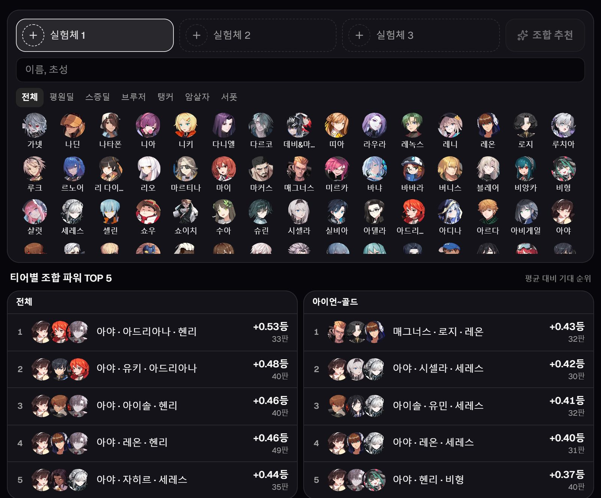
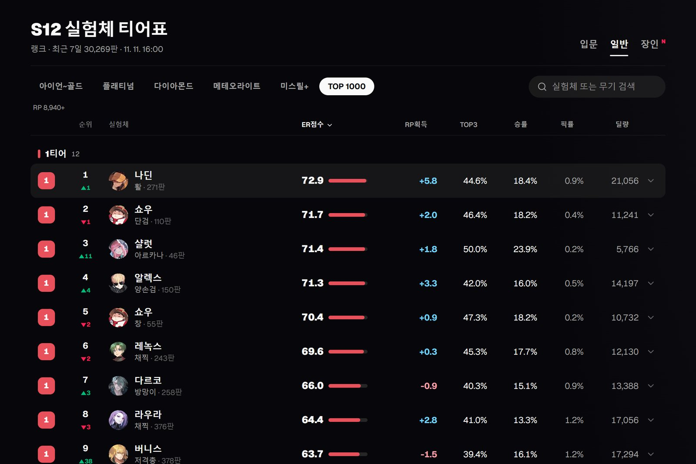
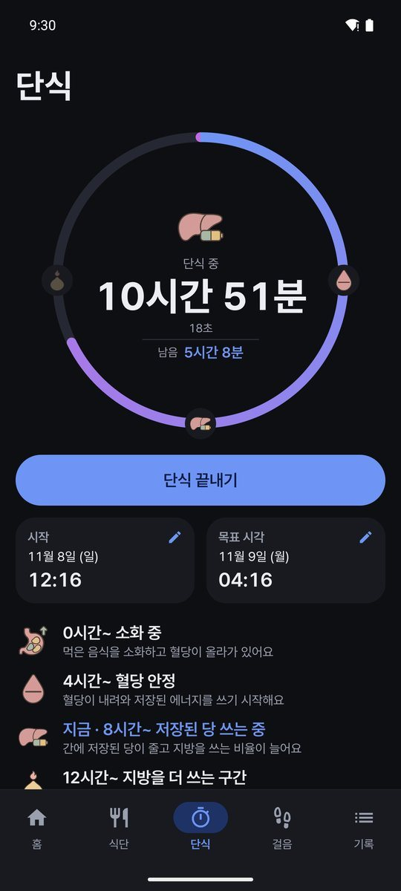

이터널 리턴은 3명이 한 팀이 되어, 한 경기에 최대 24명이 겨루는 온라인 게임입니다. 다른 게임처럼 실력을 보완할 피드백이나 상대적인 통계를 보여 주는 사이트가 마땅치 않아서, 처음에는 디스코드 봇으로 만들었습니다. 그러다 이럴 거면 차라리 웹사이트로 만들어야겠다 싶어 바꿨는데, 커뮤니티 입소문을 타서 지금도 매일 많은 분이 찾아옵니다.
닉네임을 검색하면 게임사 공식 API에서 경기 기록을 받아, 그 플레이어의 전적과 플레이 분석을 보여 줍니다.
전적 · 닉네임을 검색하면 나오는 화면. 시즌 성적과 최근 20경기 요약, 경기 목록을 보여 줍니다.
분석 · 비슷한 실력과 비교한 6축

조합 가이드 · 순위가 걸린 경기 약 11만 7천 판을 집계한 3인 팀 성적

캐릭터 순위표 · 지난 7일 경기 성적으로 매긴 순위
화면 속 플레이어 닉네임과 순위는 가렸습니다.
만든 기능
전적 검색닉네임으로 시즌 전적과 최근 경기를 봅니다. 공식 API에 요청 한도가 있어서, 자동 수집보다 사용자 검색을 먼저 처리합니다.
플레이 분석생존, 전투 기여 같은 여섯 항목을 실력이 비슷한 사용자와 비교해 6축 그래프로 보여 줍니다. 커뮤니티에 그 모양을 올리며 웃던 분들이 많았던 게 기억에 남습니다.
AI 분석과 챗봇LLM이 전적을 읽고 코칭 글을 씁니다. 챗봇은 전적을 조회하거나, 공식 게임 데이터와 패치노트를 SQLite 전문 검색(FTS5)으로 찾아 답합니다.
조합 가이드, 순위표성적이 좋은 3인 조합과 캐릭터를 경기 기록으로 집계해 보여 줍니다.
점수 예측LightGBM으로 시즌이 끝날 때의 랭크 점수(상위권 기준 1만 점 안팎)를 예측합니다. 학습에 쓰지 않은 344명의 실제 점수와 비교했을 때 평균 오차는 573점, 예측 범위(P10~P90) 적중률은 81%였습니다.
문제를 찾아 고친 일
ERCraft를 운영하며 겪은 일 가운데 세 가지입니다.
"팀원 기록이 없다"는 문의에서 저장이 덜 된 경기를 찾아 고쳤습니다
2026년 10월 · 사용자 문의 대응 · TypeScript, Prisma, MySQL
문제
팀원 기록에 "공식 기록 없음"이 뜬다는 문의를 받고 확인해 보니, 24명이 있어야 할 경기에 3명만 저장돼 있었습니다.
원인
경기가 끝나기 전에 받아 둔 기록이 완성된 기록으로 저장돼 있었습니다.
한 일
끝난 경기도 24명이 안 될 때가 있어서, 참가자 수 대신 1등 기록이 있는지로 완성 여부를 판단하고 끝난 지 24시간이 안 된 미완성 경기는 다시 받게 했습니다. 그런데 첫 수정 뒤에도 오래된 미완성 경기가 남아 있어서, 40분 뒤에 한 번 더 고쳐 이미 저장된 경기까지 다시 확인하게 했습니다.
결과
배포 후 문의한 사용자의 경기 6개가 복구됐습니다. 원본을 다시 받을 수 없는 오래된 경기는 화면에 "기록 부족"으로 표시합니다.
첫 검색이 느린 원인을 단계별로 재서 찾았습니다
2026년 10월 · TypeScript, Node.js, Fastify, 공식 게임 API
저장된 기록이 오래된 플레이어 한 명을 검색해 보니, 첫 화면이 뜨기까지 5.3초가 걸렸습니다. 운영자용 진단 화면을 열어 단계별 시간을 보니 닉네임 주인이 바뀌었는지 확인하는 데만 4초였습니다. 공식 경기 목록을 매번 첫 페이지부터 읽고 있었습니다.
남의 전적이 나오면 안 되니 이 확인은 뺄 수 없었습니다. 대신 공식 API의 다음 페이지 커서가 경기 번호라는 걸 알아내서, 저장된 최신 경기 자리부터 읽고 못 찾으면 첫 페이지부터 다시 읽게 바꿨습니다. 같은 플레이어로 다시 재니 1.75초가 나왔습니다.
AI가 쓴 분석 문장의 숫자를 원본 데이터와 대조합니다
2026년 9월 · TypeScript, LLM API
서비스에 붙이기 전에 테스트해 보니 LLM이 12.2 패치와 12.2b 패치를 섞어 말했고, 결과를 하나만 쓰라고 시킨 뒤에도 수치가 바뀐 방향을 거꾸로 썼습니다. 그래서 글 속 숫자를 원본 데이터와 대조하는 검사를 넣었습니다.
처음에는 한 곳만 틀려도 글 전체를 다시 쓰게 했는데, 그랬더니 맞던 항목까지 바뀌었습니다. 지금은 항목마다 근거 데이터를 붙여 틀린 항목만 다시 쓰게 하되 근거 데이터는 못 바꾸게 막았고, 그래도 틀리면 화면에 내보내지 않습니다.
외국어 분석도 한국어로 만들어 이 검사를 거친 다음 번역합니다. 설계를 맡긴 AI 모델은 처음부터 외국어로 쓰는 안을 냈지만, 한국어 기준 검사를 건너뛰게 돼서 받지 않았습니다.
운영하면서 한 일
삭제 요청 대응"내 전적을 지워 달라"는 요청을 받고, 다음 날 검색·프로필·API·AI 분석에서 그 계정이 보이지 않게 하는 기능을 배포했습니다.
게임사에 문의경기 데이터 파일을 분석에 써도 되는지 게임 개발사에 문의해 허락을 받았습니다. 조건에 맞춰 원본 파일은 분석 뒤 지우고, 비공식 사이트라는 표시를 두었습니다.
DB 관리로컬 PC로 돌리다 보니 DB와 작업 폴더가 한 디스크에 있습니다. 그대로 두면 4주쯤 뒤 꽉 찰 상황이라 압축했습니다. 가장 큰 테이블이 38.95GB에서 16.3GB가 됐고, 그동안 서비스는 내리지 않았습니다.
게임 업데이트 알림게임 데이터가 바뀌면 디스코드로 알림이 오게 했습니다. 알림을 보고 사이트 데이터를 언제 다시 만들지 정합니다.
ERCraft 구조
Windows 서버 한 대로 운영합니다. 화면은 Cloudflare Pages에 올리고, 데이터 요청만 Tunnel을 거쳐 서버로 받습니다.
ERCraft에 공식 API를 붙이다가 여러 번 막혔습니다. 요청 한도에 걸리고, 정상 응답 안에 오류 코드가 들어 있고, 버전마다 항목 이름이 바뀌었습니다. 이걸 처리한 코드를 떼어 내 같은 API를 쓰는 다른 개발자도 쓸 수 있게 공개했습니다.
새 경기만 이어 받기, 팀 묶기, 등급 계산과 함께 AI 도구가 전적을 조회하는 MCP 서버도 넣었습니다. 공식 문서에 없는 동작은 실제 경기 30판을 대조해 가이드로 정리했고, 테스트는 GitHub Actions가 Node 18~24에서 자동으로 돌립니다.
고친 코드 한 곳: 팀 순위를 누구 기록에서 가져올까
한 경기의 참가자를 팀으로 묶는 함수입니다. 처음에는 팀 순위를 첫 번째 팀원의 기록에서 가져왔습니다. 실제 경기를 확인하다가, 게임을 중간에 포기한 사람의 기록에는 나간 시점의 순위(5위)가 남고 끝까지 한 팀원에게는 최종 순위(3위)가 남은 경기를 찾았습니다. 그래서 포기하지 않은 팀원 가운데 가장 오래 남은 사람을 기준으로 바꿨습니다.
// A player who gave up keeps their rank and team kills from when they left,
// so team values come from someone who stayed: not given up, longest duration.
function stayScore(p: UserGame): [number, number] {
const duration = typeof p.duration === 'number' && Number.isFinite(p.duration) ? p.duration : -1
return [p.giveUp === 1 ? 0 : 1, duration]
}
src/teams.ts · 입력 순서가 바뀌어도 같은 사람을 고르는지 확인하는 테스트를 함께 넣었습니다.
AI 도구를 쓰면서
라이브러리를 만들 때 코드를 쓴 모델 말고 다른 모델에게 검토를 시켰다가, API 키가 다른 서버로 갈 수 있는 문제를 찾아 고친 적이 있습니다.
중요한 변경은 여러 모델이 서로 검토하게 합니다. 지적이 나오면 제가 먼저 보고, 모델들에게 한 번 더 물어보고, 테스트 서버에서 확인한 뒤 라이브 서버에 올립니다. 시키지 않은 코드까지 바뀌는 일도 잦아서, 변경 내역은 요청한 범위 밖부터 봅니다.
안드로이드 앱
가볍게
체중과 식단을 기록하는 다이어트 앱
기간
2026년 11월
역할
지인에게 만들어 준 앱 · 기획, 개발, 배포
기술
Kotlin, Jetpack Compose, Room, Hilt · 서버 Cloudflare Workers + D1(TypeScript) · Google 로그인
다이어트를 하는 지인에게 만들어 준 앱입니다. 체중, 식단, 물, 단식, 걸음을 기록하고 목표까지 얼마나 왔는지 한 화면에서 보여 줍니다. 지인이 써 보고 요청한 달력의 칼로리 표시, 영양제 체크, 단식 그래프를 넣으며 1.0에서 1.4까지 버전을 올렸습니다. 지인은 다른 앱에 나올 때까지 기다리지 않고 입맛대로 쓸 수 있어서 너무 좋다고 했습니다.
홈식단

단식 타이머기록 그래프
만들면서 신경 쓴 것
로그인은 선택처음에는 기록을 기기에만 저장하고 서버로 아무것도 보내지 않습니다. Google로 로그인하면 여러 기기에서 이어 쓰고, 두 기기에서 같은 기록을 고치면 더 최근에 고친 쪽을 남깁니다.
업데이트새 버전을 낼 때마다, 이전 버전에서 쓴 기록이 그대로 넘어오는지 확인하고 전달했습니다.
서버와 데이터상시 켜 두는 서버 없이 Cloudflare 무료 범위 안에서 돌아갑니다. 식약처가 공개한 식품 33만 개를 앱에 넣어, 음식 검색은 인터넷 없이도 됩니다.
외주
마인크래프트 서버 외주
서버를 만들고 Skript와 플러그인을 붙이는 일
기간
2020년 – 현재
규모
서버 외주 5건 이상
기술
Skript, 플러그인 설정, Java(직접 쓴 것은 간단한 플러그인)
Skript는 마인크래프트 서버에 기능을 넣는 스크립트 언어입니다. 이것저것 많이 만들었고 외주도 받아 했습니다. 군 복무 중에는 지인들끼리 하는 서버만 만들었습니다.
RPG 서버의뢰를 받아 Skript와 플러그인 설정을 전부 맡았습니다. 농사, 낚시 같은 직업 스크립트가 인기 있었는데, 직업마다 1~5차가 있고 해금권으로 전직합니다. 그 뒤 같은 서버를 따로 사 간 사람이 두 명 더 있었고, 팔 때마다 여러 기능을 더해 넘겼습니다.
미니게임 4종2026년 10월, Claude Code와 Codex로 Java 플러그인을 만들었습니다. 참가자는 명령어 없이 NPC와 버튼만 누르면 되고, 위치와 시간은 운영자가 게임 안 메뉴에서 바꿉니다. 서버가 꺼졌다 켜져도 이어서 진행됩니다.
모드팩 안내2026년 11월, 모드팩 서버에 처음 온 사람이 따라갈 퀘스트 93개와 한글 번역 14,522줄을 만들었습니다. 번역은 LLM으로 하고, %s나 색 코드가 원문과 어긋난 줄은 영어로 남겼습니다.
카드를 모아 덱을 만들고, 적과 번갈아 카드를 내며 다음 단계로 올라가는 게임입니다. ERCraft에서 게임 상대를 기다리는 동안 하라고 만들었습니다.
난이도를 고칠 때마다 제가 여러 판을 해 볼 수는 없어서, AI 모델이 실제 게임을 한 판 끝까지 하게 했습니다. 차례마다 게임 상황을 넘기면 모델이 낼 카드와 공격할 대상을 고릅니다. 규칙에 어긋난 행동은 막고 횟수만 셉니다. 모델 3개로 하루에 21차례 돌린 적도 있습니다.